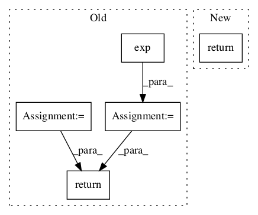

fe50c52a31b3231a1777f14eb6131a819f082fc8,Models/UnetSpectrogramSeparator.py,UnetSpectrogramSeparator,get_output,#UnetSpectrogramSeparator#Any#Any#Any#Any#,39

Before Change
return mags
else:
// Reconstruct audio
acc_stft = tf.multiply(tf.complex(mags[0], 0.0), tf.exp(tf.complex(0.0, mix_angle)))
voice_stft = tf.multiply(tf.complex(mags[1], 0.0), tf.exp(tf.complex(0.0, mix_angle)))
acc_audio = tf.contrib.signal.inverse_stft(acc_stft, self.frame_len, self.hop, self.frame_len, window_fn=inv_window)
voice_audio = tf.contrib.signal.inverse_stft(voice_stft, self.frame_len, self.hop, self.frame_len, window_fn=inv_window)
tf.summary.audio("acc_audio", acc_audio, 8192, collections=["sup"])
tf.summary.audio("voice_audio", voice_audio, 8192, collections=["sup"])
// Reshape to [batch_size, samples, 1]
acc_audio = tf.expand_dims(acc_audio, 2)
voice_audio = tf.expand_dims(voice_audio, 2)
return acc_audio, voice_audio
After Change
audio_out[source_name] = audio
return audio_out
In pattern: SUPERPATTERN
Frequency: 4
Non-data size: 5
Instances
Project Name: f90/Wave-U-Net
Commit Name: fe50c52a31b3231a1777f14eb6131a819f082fc8
Time:
Author: null
File Name: Models/UnetSpectrogramSeparator.py
Class Name: UnetSpectrogramSeparator
Method Name: get_output
Project Name: zsdonghao/text-to-image
Commit Name: 74796ff02e9425ca336f595978fe6e7c422c0378
Time:
Author: null
File Name: tensorlayer/activation.py
Class Name:
Method Name: pixel_wise_softmax
Project Name: arnomoonens/yarll
Commit Name: ecf257c1813cf3dd320c6d717208611dadeb2f0e
Time:
Author: null
File Name: agents/trpo/trpo.py
Class Name: TRPO
Method Name: make_actor_loss
Project Name: arnomoonens/yarll
Commit Name: ecf257c1813cf3dd320c6d717208611dadeb2f0e
Time:
Author: null
File Name: agents/ppo/ppo.py
Class Name: PPO
Method Name: make_actor_loss